AI, GenAI & agentic security
LLM threat modelling, AI red teaming, RAG and agent security, secure tool calling, MCP, guardrails, AI safety evaluations and AI governance.
AI Security Leader · Security Architect
I work as an AI security architect, a security leader for 18+ engineers, a red teamer and researcher, and a builder of secure AI agents
13+ years securing products, platforms and people. Today I design secure-by-design AI systems: LLM threat models, AI red teaming, guardrails for agentic workflows, and security programmes that let teams ship AI safely.
Impact
AI security
I threat-model LLM applications, RAG pipelines and AI agents, then design the controls that stop each risk, mapped to the OWASP Top 10 for LLM Applications, MITRE ATLAS and the NIST AI RMF.
Expertise
LLM threat modelling, AI red teaming, RAG and agent security, secure tool calling, MCP, guardrails, AI safety evaluations and AI governance.
Secure-by-design reference patterns, architecture reviews, trust boundaries, Zero Trust, IAM, encryption and risk-based design decisions.
Secure SDLC, SAST, DAST, SCA, secure code review, penetration testing, CI/CD gates, API security and supply-chain risk.
AWS, Azure and GCP, IAM and PAM, SSO and MFA, CSPM, WAF, Kubernetes and container security, secrets and data protection.
SOC, SIEM, detection engineering, incident response, vulnerability management, ISO 27001, SOC 2, PCI DSS, GDPR, RBI and CERT-In.
Built and scaled security teams, security roadmaps and operating models, executive risk reporting, and partnership with Product and Engineering.
Journey
Every few years, the thing I protect gets bigger: from a single codebase to AI agents that act on their own. Titles and companies are on LinkedIn; this is the craft.
I wrote software first, so I know how it is built and how it breaks.
Broke into web apps and networks for clients across Europe, Asia and the Middle East.
Took apart mobile apps, firmware and radios across 200+ products: Android, iOS, BLE and Zigbee.
Designed threat models, cloud controls and card-data encryption for regulated products.
Turned security into a system: gates in 200+ repositories, critical fixes in under 14 days.
Grew the teams behind it: 18+ engineers across AppSec, Cloud, Red Team, SOC and GRC.
Now securing LLMs and AI agents: threat models, red teaming, guardrails and MCP.
Certifications
Open source


A free, unofficial study guide I wrote after earning three Claude certifications: full tracks for CCAO-F, CCAR-F and CCAR-P, 410 original practice questions, mock exams in the browser, 20 labs that run offline, five real-world projects and a dedicated AI security track.
Contact
Based in Bengaluru, India.